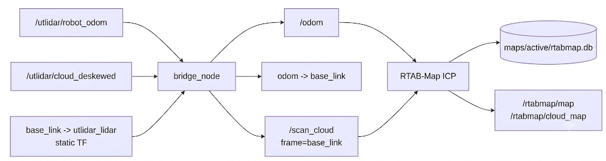
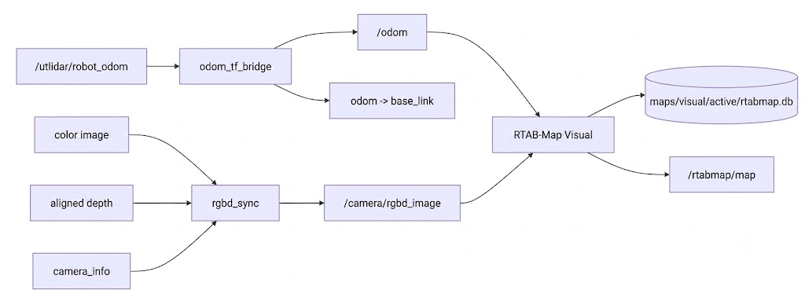
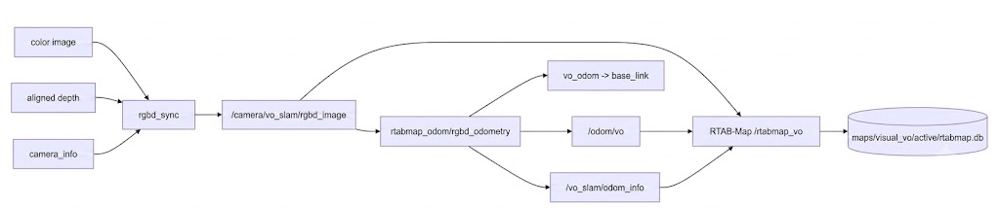
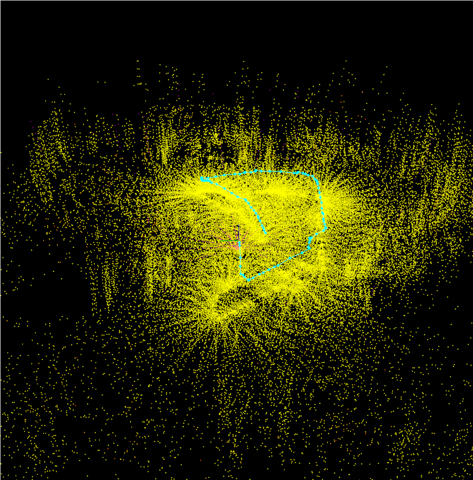
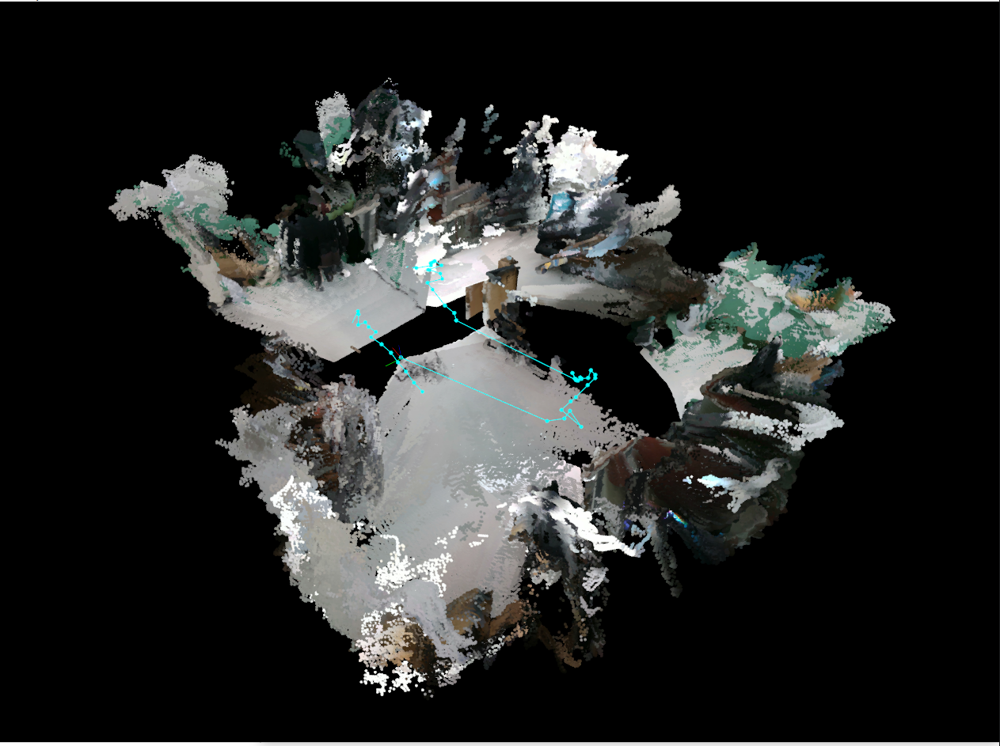
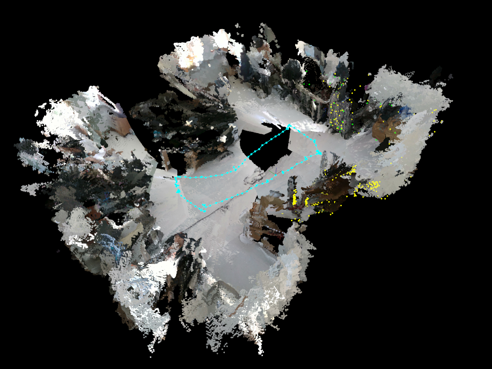

| 참고 : https://github.com/ctrlcvlab/go2-lidar-visual-slam
Architecture
| 구분 | LiDAR SLAM | Go2 odom 기반 Visual SLAM | 순수 Visual SLAM |
|---|---|---|---|
| 주 센서 | Go2 내장 LiDAR | Go2 odom + RealSense RGB-D | RealSense RGB-D |
| Odometry | Go2 자체 odometry | Go2 자체 odometry | RGB-D 영상으로 직접 계산 |
| mapping | ✅ | ✅ | ✅ |
| localization | ✅ | ✅ | 전용 launch X |
| Nav2 통합 | X | ✅ | X |
LiDAR SLAM
-
Data flow

-
Go2가 Raw Data 생성
utlidar/robot_odom: Go2가 추정한 이동량Poseutlidar/cloud_deskewed: 움직임 왜곡이 보정된 LiDAR Point CloudDeskew: 여러 시점에서 측정된 점들을 하나의 기준 시점 Coordinate로 보정하는 것
-
bridge_node가 RTAB-Map용으로 정리-
bridge_node- LiDAROdometry Data를 RTAB-Map이 안정적으로 사용할 수 있는 형태로 변환하는 중간 Adapter node
-
RTAB-Map(Real-Time Apperance-Based Mapping)- Sensor Data와 Odometry를 이용해 로봇의 위치를 추정하고 주변 환경의 Map을 만드는 Graph-based SLAM 알고리즘
-
시간축 보정
- Go2 Sensor의 timestamp를 ROS 시간에 맞춰 서로 다른 Sensor data가 같은 실제 시점을 나타내도록 하는 것
-
Coordinate 정리
- 서로 다른 기준 좌표계로 표현된 data를 하나의 일관된 좌표계 관계 안에 놓는 것
-
/odom재발행- Go2 원본 odometry를 timestamp와 frame을 정리해서 RTAB-Map이 기대하는 표준
/odom형태로 만들기 위함
- Go2 원본 odometry를 timestamp와 frame을 정리해서 RTAB-Map이 기대하는 표준
-
odom→base_linkTF 생성TF: 여러 Coordinate Frame 사이의 Transformation 관계를 관리하고 전달하는 ROS 시스템
-
LiDAR Point Cloud를
base_link기준의/scan_cloud로 변환- LiDAR가 측정한 Point Cloud는 LiDAR 좌표계 기준임
-
-
RTAB-Map이 SLAM 수행
-
/odom: 로봇이 얼마나 움직였는지 -
/scan_cloud: 주변 환경이 어떻게 생겼는지 -
ICP 기반으로 Point Cloud를 정합하고, map을 누적
-
-
Go2 odom 기반 Visual SLAM
-
이동 추정은 Go2 odometry로 하고, 환경 인식과 loop closure는 RGB-D로 수행하는 구조
-
Data Flow

-
Go2가 Odometry 생성
/utlidar/robot_odom- Go2가 자체적으로 추정한 로봇의 PositionPose 정보
-
odom_tf_bridgeOdometry 정규화-
odom→base_linkDynamic TF 발행 -
Timestamp 보정
-
frame_id정리frame_id: ROS message의 data가 어느 Coordinate Frame을 기준으로 표현되어 있는지 나타내는 좌표계 이름
ex) frame_id = “base_link”
-
LiDAR Point Cloud는 처리하지 않음
-
-
RealSense가 RGB-D Data 생성
color imagealigned depthcamera info
-
rgbd_sync가 RGB와 Depth를 시간적으로 맞춤- 3개의 입력을 묶어서
/camera/rgbd_image를 만듦- ∵ RGB에서 찾은 feature의 depth가 잘못된 위치에 나타날 수 있음
- 3개의 입력을 묶어서
-
RTAB-Map이
/odom과 RGB-D를 입력 받음- motion 정보와 visual observation 결합
-
Visual Feature 추출 및 Matching
- RGB image에서 feature를 찾음
- 다른 frame의 feature와 비교해 동일한 물체를 찾음
-
Depth를 이용해 Visual Constraint 계산
- matching된 feature에 Depth를 결합하면 공간상의 위치 관계를 계산할 수 있음
→ 두 시점의 로봇 Pose 사이에 상대적인 위치 관계가 있어야한다는 Visual Constraint 생성
- matching된 feature에 Depth를 결합하면 공간상의 위치 관계를 계산할 수 있음
-
Loop Closure
- 이전 방문 장소와 현재 RGB-D 장면이 충분히 비슷한 경우 두 Pose 사이에 Constraint 추가
-
Pose Graph Optimization
- 기존 Go2 odometry에 따라 가 연결되어 있음
- 이에 Visual Constraint와 Loop Closure 추가
- 전체 Pose Graph 최적화
→ Go2 odometry의 누적 drift를 보정할 수 있음
-
Map과 RTAB-Map DB 생성
- 최적화된 Pose와 RGB-D data를 이용해 Map 생성
maps/visual/active/rtabmap.db에 Graph와 Sensor 정보 저장- 이후 Localization 수행 가능
| 참고 : Localization
- 이후 Localization 수행 가능
-
순수 Visual SLAM
-
Go2의
utlidar/robot_odm을 사용하지 않음 -
Data Flow

-
RealSense가 RGB-D 입력 생성
- RGB는 Visual Feature 추출에 사용하고, Depth는 각 feature의 실제 거리 정보를 제공함
/camera/color/image_raw/camera/aligned_depth_to_color/image_raw/camera/color/camera_info
-
rgbd_sync가 RBGDepthCameraInfo 동기화/camera/vo_slam/rgbd_image
-
rgbd_odometry가 Visual Odometry 계산rtabmap_odom/rgbd_odometry→/odom/vo- RGB-D frame 사이에서 visual feature를 찾고, matching해서 카메라가 얼마나 이동했는지 추정
- 이전 RGB-D 영상 → 현재 RGB-D 영상의 변화로 로봇의 상대적인 이동을 추정
-
Visual Odometry 진단 정보 생성
/vo_slam/odom_info- feature matching이나 inlier 등 odometry 계산 상태를 나타내는 진단 정보
-
RTAB-Map이 Visual Odometry + RGB-D를 입력으로 받음
/odom/vo→ 로봇의 연속적인 이동 추정- RGB-D → 환경 관측 및 visual constarint 생성
odom_info→ odometry 관련 추가 정보
-
RTAB-Map이 Visual Registeration 수행
- RGB Feature 사용
- RGB-D 장면 사이에서 대응점을 찾아, 상대적인 geometric constraint를 만듦
-
Loop Closure 탐지
- 현재 장면과 이전에 방문한 장면이 비슷하면, 멀리 떨어진 Pose 사이에 Constraint를 추가함
-
Pose Graph Optimization
- Visual Odometry는 계속 누적하면 drift가 생길 수 있음
- RTAB-Map은 Visual Odometry + Visual Constraints + Loop Closure를 함께 사용해 trajectory를 최적화함
-
Map 생성
- 최적화된 Pose와 Depth를 이용해 map을 만듦
- RGB-D Depth를 이용한 Occupancy Grid 생성도 활성화되어 있음
maps/visual_vo/active/rtabmap.db
-
Odometry message
- 특정 기준 좌표계에서 로봇의 PositionPoseVelocity와 그 불확실성을 표현한 ROS message
nav_msgs/Odometry
header
├─ stamp # Odometry 측정 시간. sensor 동기화에 중요
└─ frame_id # pose가 어느 좌표계 기준으로 표현되었는지
child_frame_id # twist가 어느 robot frame에 대응하는지 나타냄
pose # 로봇의 위치 + 자세
├─ pose
│ ├─ position
│ │ ├─ x
│ │ ├─ y
│ │ └─ z
│ └─ orientation
│ ├─ x
│ ├─ y
│ ├─ z
│ └─ w
└─ covariance # 현재 위치·속도 추정값을 얼마나 신뢰할 수 있는지 나타내는 불확실성 정보
twist # 로봇의 속도
├─ twist
│ ├─ linear
│ │ ├─ x
│ │ ├─ y
│ │ └─ z
│ └─ angular
│ ├─ x
│ ├─ y
│ └─ z
└─ covariance
Go2 실습 中 LiDAR Mapping
- Mapping 과정 및 map
maps/active/rtabmap.dbMap DB 생성localization.launch.py에서 불러와 기존 map 위에서 localization

Go2 실습 中 Go2 Odometry 기반 Visual Mapping
- RealSense RGB-D와 Go2 Odometry를 이용해 RTAB-Map Visual Mapping 수행
maps/visual/active/rtabmap.dbMap DB 생성- Go2 이동에 따라 Visual Map과 trajectory 누적

Go2 실습 中 Visual Mapping
- RealSense RGB-D만 사용해
rgbd_odometry로/odom/vo를 생성하고 RTAB-Map Visual SLAM 수행maps/visual_vo/active/rtabmap.db생성- Visual Maptrajectroy 누적

Go2 실습 中 Visual Localization + Nav2
-
저장된 Go2 odometry 기반 Visual Map DB를 이용해 RTAB-Map Localization과 Nav2 연동
-
RViz에서 Goal Pose 지정 → GlobalLocal Path 생성 및
/cmd_vel→/api/sport/request를 통한 Go2 주행 -
Localization Pose가 약 2 Hz로 안정적으로 출력되며, Goal 도달까지 정상 동작
visual_navigation_mode.launch.py
src/go2_nav2_bringup/launch/visual_navigation_mode.launch.py-
저장된 Visual Map으로 RTAB-Map Localization을 수행
-
결과를 Nav2와 Go2 실제 제어에 연결하는 파일
-
RTAB-Map DB → Localization → Nav2 → /cmd_vel → sport_cmd_bridge → Go2
-
nav2_visual_go2.yaml
- Nav2가 map을 어떻게 보고, path를 어떻게 생성하고, Go2를 어떻게 움직일지 정하는 설정 파일
| 참고 : Costmap, Planner, Controller-
Global Costmap
rtabmap/map기반 전체 지도상의 장애물이동 가능 영역 표현
-
Local Costmap
- RealSense Depth에서 만든
/scan으로 Go2 주변 실시간 장애물 표현
- RealSense Depth에서 만든
-
Global Planner
NavfnPlanner+ A*로 현재 위치 → Goal까지 전체 Path 생성
-
Local Controller
MPPIController가 Global Path를 따라가며 실제 계산
-
Go2는 전진, 회전, 옆으로 이동할 수 있으므로, 를 모두 사용함
-
sport_cmd_bridge.py
-
Nav2가 만든
/cmd_vel을 Go2가 이해하는/api/sport/request명령으로 변환하는 bridge -
안전 장치
enable_motion=false→ 실제 명령을 보내지 않음- 를 설정된 최대 속도로 제한
/cmd_vel가 일정 시간 이상 끊기면, StopMove를 보내 정지
command_policy.py
/cmd_vel로 들어온 속도 명령을 검사해, Go2 Move 또는 StopMove를 보낼지 결정하는 안전 로직
odom_tf_bridge.py
- Go2의 원본 odometry를 ROS/Nav2/RTAB-Map이 사용하기 좋은
/odom과odom→base_linkTF로 정규화하는 bridge-
Go2 odometry를 그대로 사용하되, 시간축과 TF 구조를 ROS 환경에 맞추는 역할
- 즉, Go2의 raw topic을 중간 bridge를 통해 표준화
-
timestamp 보정이 중요함
-
bridge_node.py
- Go2의 LiDAR odometry와 Point Cloud를 RTAB-Map LiDAR SLAM에서 바로 쓸 수 있는 형태로 변환하는 bridge
- 즉, LiDAR SLAM 전용 전처리 node
rtabmap_visual_real.yaml
- Go2 odometry + RealSense RGB-D를 RTAB-Map Visual SLAM에 어떻게 넣고 처리할지 정하는 설정 파일
rgbd_odometry_vo.yaml
- Pure Visual SLAM에서 RealSense RGB-D만으로 Visual Odometry를 어떻게 계산할지 정하는 설정 파일
rtabmap_visual_vo.yaml
- Pure Visual SLAM에서 Visual Odometry
/odom/vo와 RGB-D를 받아 RTAB-Map이 실제 map을 만드는 방법을 설정하는 파일